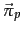
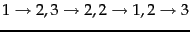
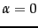
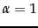
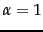
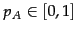
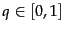
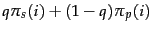
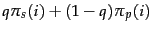

Next:
Hubs and Authorities
Up:
PageRank
Previous:
The PageRank computation
Contents
Index
Topic-specific PageRank
Thus far we have discussed the PageRank computation with a teleport operation in which the surfer jumps to a random web page chosen uniformly at random. We now consider teleporting to a random web page chosen
non-uniformly. In doing so, we are able to derive PageRank values tailored to particular interests. For instance, a sports aficionado might wish that pages on sports be ranked higher than non-sports pages. Suppose that web pages on sports are ``near'' one another in the web graph. Then, a random surfer who frequently finds himself on random sports pages is likely (in the course of the random walk) to spend most of his time at sports pages, so that the steady-state distribution of sports pages is boosted.
Suppose our random surfer, endowed with a teleport operation as before, teleports to a random web page on the topic of sports instead of teleporting to a uniformly chosen random web page. We will not focus on how we collect all web pages on the topic of sports; in fact, we only need a non-zero subset of sports-related web pages, so that the teleport operation is feasible. This may be obtained, for instance, from a manually built directory of sports pages such as the open directory project (http://www.dmoz.org/) or that of Yahoo.
Provided the set of sports-related pages is non-empty, it follows that there is a non-empty set of web pages  over which the random walk has a steady-state distribution; let us denote this sports PageRank distribution by
over which the random walk has a steady-state distribution; let us denote this sports PageRank distribution by  . For web pages not in , we set the PageRank values to zero. We call the topic-specific PageRank for sports.
. For web pages not in , we set the PageRank values to zero. We call the topic-specific PageRank for sports.
![\includegraphics[width=13cm]{topics.eps}](img1938.png)
Topic-specific PageRank.In this example we consider a user whose interests are 60% sports and 40% politics. If the teleportation probability is 10%, this user is modeled as teleporting 6% to sports pages and 4% to politics pages.
We do not demand that teleporting takes the random surfer to a uniformly chosen sports page; the distribution over teleporting targets could in fact be arbitrary.
In like manner we can envision topic-specific PageRank distributions for each of several topics such as science, religion, politics and so on. Each of these distributions assigns to each web page a PageRank value in the interval  . For a user interested in only a single topic from among these topics, we may invoke the corresponding PageRank distribution when scoring and ranking search results. This gives us the potential of considering settings in which the search engine knows what topic a user is interested in. This may happen because users either explicitly register their interests, or because the system learns by observing each user's behavior over time.
. For a user interested in only a single topic from among these topics, we may invoke the corresponding PageRank distribution when scoring and ranking search results. This gives us the potential of considering settings in which the search engine knows what topic a user is interested in. This may happen because users either explicitly register their interests, or because the system learns by observing each user's behavior over time.
But what if a user is known to have a mixture of interests from multiple topics? For instance, a user may have an interest mixture (or profile) that is 60% sports and 40% politics; can we compute a personalized PageRank for this user? At first glance, this appears daunting: how could we possibly compute a different PageRank distribution for each user profile (with, potentially, infinitely many possible profiles)? We can in fact address this provided we assume that an individual's interests can be well-approximated as a linear combination of a small number of topic page distributions. A user with this mixture of interests could teleport as follows: determine first whether to teleport to the set of known sports pages, or to the set of known politics pages. This choice is made at random, choosing sports pages 60% of the time and politics pages 40% of the time. Once we choose that a particular teleport step is to (say) a random sports page, we choose a web page in uniformly at random to teleport to. This in turn leads to an ergodic Markov chain with a steady-state distribution that is personalized to this user's preferences over topics (see Exercise 21.2.3 ).
While this idea has intuitive appeal, its implementation appears cumbersome: it seems to demand that for each user, we compute a transition probability matrix and compute its steady-state distribution. We are rescued by the fact that the evolution of the probability distribution over the states of a Markov chain can be viewed as a linear system. In Exercise 21.2.3 we will show that it is not necessary to compute a PageRank vector for every distinct combination of user interests over topics; the personalized PageRank vector for any user can be expressed as a linear combination of the underlying topic-specific PageRanks. For instance, the personalized PageRank vector for the user whose interests are 60% sports and 40% politics can be computed as
where
and
 are the topic-specific PageRank vectors for sports and for politics, respectively.
Exercises.
- Write down the transition probability matrix for the example in Figure 21.2 .
- Consider a web graph with three nodes 1, 2 and 3. The links are as follows:
. Write down the transition probability matrices for the surfer's walk with teleporting, for the following three values of the teleport probability: (a) ; (b)
 and (c) .
and (c) .
- A user of a browser can, in addition to clicking a hyperlink on the page he is currently browsing, use the back button to go back to the page from which he arrived at . Can such a user of back buttons be modeled as a Markov chain? How would we model repeated invocations of the back button?
- Consider a Markov chain with three states A, B and C, and transition probabilities as follows. From state A, the next state is B with probability 1. From B, the next state is either A with probability , or state C with probability . From C the next state is A with probability 1. For what values of  is this Markov chain ergodic?
- Show that for any directed graph, the Markov chain induced by a random walk with the teleport operation is ergodic.
- Show that the PageRank of every page is at least
 . What does this imply about the difference in PageRank values (over the various pages) as becomes close to 1?
. What does this imply about the difference in PageRank values (over the various pages) as becomes close to 1?
- For the data in Example 21.2.2, write a small routine or use a scientific calculator to compute the PageRank values stated in Equation 260.
- Suppose that the web graph is stored on disk as an adjacency list, in such a way that you may only query for the out-neighbors of pages in the order in which they are stored. You cannot load the graph in main memory but you may do multiple reads over the full graph. Write the algorithm for computing the PageRank in this setting.
- Recall the sets and introduced near the beginning of Section 21.2.3 . How does the set relate to ?
- Is the set always the set of all web pages? Why or why not?
- Is the sports PageRank of any page in at least as large as its PageRank?
- Consider a setting where we have two topic-specific PageRank values for each web page: a sports PageRank , and a politics PageRank . Let be the (common) teleportation probability used in computing both sets of topic-specific PageRanks. For , consider a user whose interest profile is divided between a fraction
 in sports and a fraction in politics. Show that the user's personalized PageRank is the steady-state distribution of a random walk in which - on a teleport step - the walk teleports to a sports page with probability and to a politics page with probability .
in sports and a fraction in politics. Show that the user's personalized PageRank is the steady-state distribution of a random walk in which - on a teleport step - the walk teleports to a sports page with probability and to a politics page with probability .
- Show that the Markov chain corresponding to the walk in Exercise 21.2.3 is ergodic and hence the user's personalized PageRank can be obtained by computing the steady-state distribution of this Markov chain.
- Show that in the steady-state distribution of Exercise 21.2.3, the steady-state probability for any web page
 equals
.
equals
.
Next:
Hubs and Authorities
Up:
PageRank
Previous:
The PageRank computation
Contents
Index
© 2008 Cambridge University Press
This is an automatically generated page. In case of formatting errors you may want to look at the PDF edition of the book.
2009-04-07